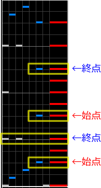
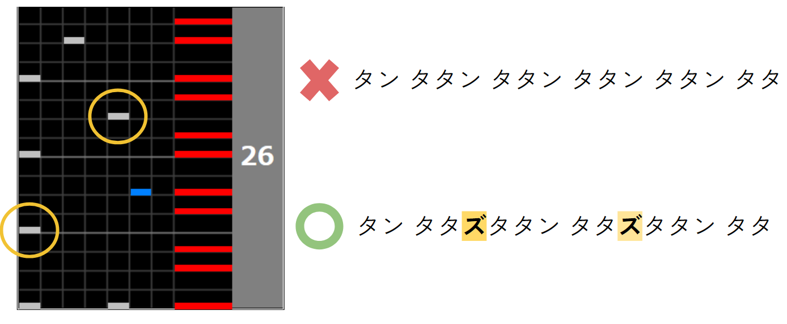

📑 文章目录（18 节）
本文将汇总 ☆9～12 的连皿与皿复合练习曲目，请用作专门练习转盘（皿）日的选曲清单。
文章的后半部分还会讲解打好连皿的技巧。
※本列表系笔者查看谱面后凭主观挑选整理，可能存在遗漏或不够恰当的谱面，即使发现了也还请多多包涵。
☆9 的转盘曲（皿曲）
☆9 的连皿
按字母顺序排列，加粗为特别推荐的谱面。
| 曲名 | 转盘数（皿枚数） | 备注 |
|---|---|---|
| CHECKING YOU OUT(H) | 205 | |
| Close my Eyes for Me(A) | 163 | |
| Digitank System(H) | 251 | |
| Drop It(H) | 146 | BSS |
| Hello Happiness(H) | 111 | |
| IDC feat.REVERBEE (Mo’Cuts Ver)(H) | 254 | BSS |
| Level 2(H) | 250 | BSS |
| Make Me Your Own(H) | 92 | |
| naughty girl@Queen’s Palace(H) | 229 | |
| SAMURAI-Scramble(H) | 336 | |
| Watch out!!(A) | 251 | |
| Watch Out Pt.2(H) | 251 | |
| 27th style(H) | 127 |
☆9 的皿复合
按字母顺序排列，加粗为特别推荐的谱面。
| 曲名 | 转盘数（皿枚数） | 备注 |
|---|---|---|
| Be quiet(H) | 84 | |
| Bounce Bounce Bounce(H) | 141 | |
| Cheer Train (A) | 96 | |
| Cyber Force -DJ Yoshitaka Remix-(H) | 83 | |
| Debtty Daddy(H) | 106 | |
| HIGH(H) | 57 | |
| HIGH(A) | 86 | |
| High School Love(A) | 89 | |
| Howling(A) | 97 | |
| LAB(H) | 69 | |
| Love Me Do(A) | 62 | |
| METALLIC MIND(A) | 87 | |
| Mind Mapping(A) | 84 | |
| New Decade IIDX Edition(H) | 90 | |
| NEW GENERATION -もう、お前しか見えない-(H) | 111 | |
| Regulus(H) | 102 | |
| Ristaccia(H) | 101 | |
| route 80s(A) | 120 | |
| RUGGED ASH(A) | 65 | |
| Sense 2007(N) | 101 | |
| smile(H) | 91 | |
| starmine(A) | 82 | |
| Turii-Panta rhei-(H) | 76 | |
| We are Disっ娘よっつ打ち命(A) | 60 | |
| †渚の小悪魔ラヴリィ～レイディオ†(IIDX EDIT)(H) | 121 | |
| 星をこの手に(H) | 93 |
☆10 的转盘曲（皿曲）
☆10 的连皿
按字母顺序排列，加粗为特别推荐的谱面。
| 曲名 | 转盘数（皿枚数） | 备注 |
|---|---|---|
| bass 2 bass(A) | 248 | |
| BLACK.by X-Cross Fade(H) | 389 | |
| Catch Me(A) | 136 | |
| Central Station(A) | 110 | |
| Feedback(A) | 134 | |
| Level One(H) | 239 | BSS |
| Level 3(H) | 294 | BSS |
| LOCUS OF THE TRAVEL(H) | 233 | BSS |
| Lords Of The Roundtable(H) | 379 | BSS |
| Make Me Your Own(A) | 97 | |
| Midnight Drive(A) | 280 | |
| MOVE! (We Keep It Movin’)(A) | 78 | |
| Papilio ulysses(H) | 104 | |
| Plan 8(H) | 192 | |
| Really Love(A) | 189 | |
| Red. by Full Metal Jacket(H) | 350 | |
| Red. by Jack Trance(H) | 394 | BSS |
| Serious?(A) | 211 | |
| Snake Stick(H) | 338 | |
| THE PEERLESS UNDER HEAVEN(H) | 232 | |
| 199024club -Re:BounceKiller-(H) | 320 | |
| オレはビートマニア！お前は何マニア？(A) | 117 | |
| 俺ら東京さ行ぐだ(A) | 170 | |
| 灼熱Beach Side Bunny(H) | 418 | |
| 灼熱Beach Side Bunny (Masayoshi Iimori Remix)(A) | 349 | BSS |
| 廿(A) | 166 |
☆10 的皿复合
按字母顺序排列，加粗为特别推荐的谱面。
| 曲名 | 转盘数（皿枚数） | 备注 |
|---|---|---|
| Agnus Dei(A) | 82 | |
| ANAGMA(A) | 90 | |
| Aurora(H) | 62 | |
| B4U(A) | 95 | |
| BABY LOVE(A) | 97 | |
| Beyond The Earth(H) | 154 | |
| BITTER CHOCOLATE STRIKER(H) | 117 | |
| BLUE MIRAGE(H) | 92 | |
| BRAINSTORM(H) | 144 | |
| Breaking the ground(A) | 166 | |
| Buffalo(A) | 120 | |
| CaptivtAte～裁き～(SUBLIME TECHNO MIX)(A) | 92 | |
| Confiserie(H) | 96 | |
| Cyber Force -DJ Yoshitaka Remix-(A) | 109 | |
| DOMINION(H) | 104 | |
| Donkey Donk(A) | 94 | |
| Dynamite(H) | 246 | |
| EXUSIA(H) | 100 | |
| FIRE FIRE(H) | 145 | |
| Flash back 90’s(A) | 99 | |
| Flip Flap(A) | 80 | |
| Fly you to the star(A) | 83 | |
| GALGALIM(H) | 112 | |
| garden(A) | 113 | |
| Glitch Nerds(A) | 119 | |
| Go Beyond!!(H) | 103 | |
| HAPPY☆ANGEL(A) | 70 | |
| Hydrogen Blueback(A) | 69 | |
| LAB(A) | 69 | |
| MENTAL MELTDOWN(H) | 128 | |
| one or eight(H) | 106 | |
| Regulus(A) | 116 | |
| Release The Music(A) | 80 | |
| SCREAM SQUAD(H) | 90 | |
| SigSig(A) | 84 | |
| SOLID STATE SQUAD(H) | 123 | |
| TROOPERS(H) | 155 | |
| Tropical April(H) | 95 | |
| Turii-Panta rhei-(A) | 76 | |
| WAR GAME(A) | 198 | |
| 100% minimoo-G(H) | 109 | |
| 1st Samurai(H) | 70 | |
| 250bpm(A) | 104 | |
| 3y3s(H) | 81 | |
| 5.1.1.(A) | 161 | |
| 十六夜セツナ(A) | 80 | |
| 月光(A) | 85 | |
| 雪月花(H) | 82 | |
| たまゆら(H) | 66 | |
| ビューティフルレシート(A) | 76 | |
| 星をこの手に(A) | 95 | |
| ミラージュ･レジデンス(A) | 99 | |
| 煉獄のエルフェリア(H) | 60 | |
| 罠(A) | 110 |
☆11 的转盘曲（皿曲）
☆11 的连皿
按字母顺序排列，加粗为特别推荐的谱面。
| 曲名 | 转盘数（皿枚数） | 备注 |
|---|---|---|
| Abraxas(A) | 150 | BSS |
| apo:llioth(A) | 165 | |
| Around the Future(A) | 128 | |
| Beat Juggling Mix(A) | 259 | |
| Bounce Bounce Bounce(A) | 171 | |
| BRAINSTORM(A) | 180 | |
| CHECKING YOU OUT(A) | 205 | |
| CODE:Ø(A) | 231 | |
| Digitank System(A) | 264 | |
| EMERALDAS(H) | 141 | BSS |
| Funny Shuffle(A) | 131 | |
| Halfway of promise(A) | 208 | |
| HELL SCAPER -Last Escape Remix-(A) | 156 | |
| Honey Trap(A) | 148 | |
| IDC feat.REVERBEE (Mo’Cuts Ver)(A) | 311 | |
| In The Blackest Den(A) | 125 | |
| Insane Techniques(A) | 173 | |
| Just a Little Smile(A) | 256 | |
| m1dy Deluxe(A) | 155 | |
| Modular Technology(A) | 128 | |
| naughty girl@Queen’s Palace(A) | 292 | |
| naughty girl@Queen’s Palace(L) | 287 | |
| rough percussionythm(A) | 288 | |
| Routing(A) | 195 | |
| SAMURAI-Scramble(A) | 450 | |
| Temple of Anubis(A) | 165 | BSS |
| Theory(A) | 323 | |
| Uh-Oh(A) | 284 | |
| UMMU(A) | 175 | BSS |
| Wonder Bullfighter(A) | 241 | |
| 27th style(A) | 276 | |
| & Intelligence(A) | 157 | BSS |
| X-DEN(H) | 168 | |
| とろぴかる倶楽部(A) | 245 | |
| カジノファイヤーことみちゃん(A) | 242 | BSS |
| ラクエン(A) | 231 | |
| 灼熱Pt.2 Long Train Running(H) | 505 | BSS |
| 花冠 feat.Aikapin (A) | 351 | |
| ベィスドロップ・フリークス(L) | 344 | BSS |
☆11 的皿复合
按字母顺序排列，加粗为特别推荐的谱面。
| 曲名 | 转盘数（皿枚数） | 备注 |
|---|---|---|
| B4U(BEMANI FOR YOU MIX)(A) | 116 | |
| Believe In Me(A) | 56 | |
| Beyond The Earth(A) | 132 | |
| BREAK OVER(A) | 112 | |
| BroGamer(A) | 236 | |
| CODE:Ø(A) | 231 | |
| Debtty Daddy(A) | 121 | |
| Derelict Star feat. Ryu*(A) | 112 | |
| Engraved Mark(A) | 141 | |
| Exhaust Hype(A) | 137 | |
| EXTREME MACH COLLIDER(A) | 120 | BSS |
| four pieces of heaven(A) | 93 | |
| FREEDOM(A) | 171 | |
| GALGALIM(A) | 113 | |
| GIGA THRASH(A) | 111 | |
| Giudecca(A) | 71 | |
| GOLD RUSH(A) | 89 | |
| HAPPY★RUSH(A) | 116 | |
| Hello Happiness(A) | 146 | |
| I’m so Happy(A) | 110 | |
| Inner Spirit(A) | 122 | |
| INVISIBLE STRIX(A) | 114 | |
| KHAMEN BREAK(A) | 111 | |
| MAGIC & LOVE(A) | 118 | |
| MENDES(H) | 71 | |
| MENTAL MELTDOWN(A) | 128 | |
| Night! Night! Night!(A) | 156 | |
| No.13(A) | 84 | |
| Outbreak(A) | 138 | |
| Overload Frontier(A) | 237 | |
| Playing With Fire(A) | 106 | |
| Pollinosis(A) | 83 | |
| Quick Silver(A) | 97 | BSS |
| Raison d’etre～交差する宿命～(A) | 102 | |
| REVOLVER(A) | 118 | |
| RISING FIRE HAWK(A) | 87 | |
| Rock Da House(A) | 70 | |
| ROTTERDAM SHOGUN(A) | 130 | BSS |
| Secrets(A) | 135 | |
| Sense 2007(H) | 175 | |
| smile(A) | 139 | |
| STARLiGHT(A) | 165 | |
| Sun Field(A) | 87 | |
| SWEETEST SAVAGE(A) | 181 | |
| S!ck(A) | 140 | BSS |
| THE DETONATOR(A) | 138 | |
| THE FALLEN(A) | 97 | |
| Time to Air(A) | 102 | |
| VOX UP(H) | 207 | |
| Welcome(A) | 166 | |
| 1st Samurai(A) | 133 | |
| ÆTHER(A) | 144 | |
| か・し・ま・し☆PUMP UP！(A) | 172 | |
| もっと!モット!ときめき feat.松下(A) | 149 | |
| ユミル(A) | 78 | |
| 天空脳番長危機十六連打(A) | 74 | |
| 夕焼け ～Fading Day～(A) | 75 |
☆12 的转盘曲（皿曲）
☆12 的连皿
由于 ☆12 内部难度跨度极大，因此按难度分级排列。加粗为特别推荐的谱面。
难度分级参考了 ☆12 HARD 难度表。
| 曲名 | 转盘数（皿枚数） | 难度 | 备注 |
|---|---|---|---|
| The Sampling Paradise(A) | 181 | 地力D | BSS |
| 〆(A) | 204 | 地力C | BSS |
| AO-1(A) | 170 | 地力B | |
| SAY BAY(A) | 222 | 地力B | BSS |
| BLUE DRAGON(雷龍Remix IIDX)(A) | 166 | 地力B+ | |
| LASER CRUSTER (IGNITE REMIX)(A) | 209 | 地力B+ | BSS |
| Mächö Mönky(A) | 226 | 地力A | BSS |
| Xlø(A) | 167 | 地力A | |
| 2 Beasts Unchained(A) | 231 | 地力A | BSS |
| LOCUS OF THE TRAVEL(A) | 290 | 地力A+ | BSS |
| invoker(L) | 231 | 地力A+ | |
| Time to Air(L) | 201 | 地力S | |
| 焔極OVERKILL(A) | 215 | 地力S | |
| SCREAM SQUAD(A) | 152 | 个人差E | |
| Caterpillar(A) | 279 | 个人差C | |
| Level 2(A) | 354 | 个人差B+ | BSS |
| Papilio ulysses(A) | 247 | 个人差B+ | |
| 焱影(A) | 350 | 个人差B+ | |
| 雪上断火(A) | 453 | 个人差B+ | |
| BLUE MIRAGE(A) | 256 | 个人差A | |
| Red. by Full Metal Jacket(A) | 483 | 个人差A | |
| Watch Out Pt.2(A) | 427 | 个人差A | |
| 199024club -Re:BounceKiller-(A) | 438 | 个人差A | |
| 水鏡の異界(A) | 202 | 个人差A | BSS |
| Be quiet(L) | 398 | 个人差A+ | |
| Don’t believe the hype(A) | 392 | 个人差A+ | |
| SCREW // owo // SCREW(A) | 288 | 个人差A+ | BSS |
| Snake Stick(A) | 418 | 个人差A+ | |
| TOMAHAWK(A) | 314 | 个人差A+ | BSS |
| 真 地獄超特急 -HELL or HELL-(A) | 345 | 个人差A+ | BSS |
| BLACK.by X-Cross Fade(A) | 521 | 个人差S | |
| Level One(A) | 506 | 个人差S | BSS |
| Level 3(A) | 447 | 个人差S | BSS |
| Lords Of The Roundtable(A) | 592 | 个人差S | BSS |
| Red. by Jack Trance(A) | 517 | 个人差S | BSS |
| The Chase(A) | 464 | 个人差S | BSS |
| THE PEERLESS UNDER HEAVEN(A) | 375 | 个人差S | |
| WHA(A) | 347 | 个人差S | BSS |
| Plan 8(A) | 392 | 个人差S+ | |
| RAGE feat.H14 of LEONAIR(A) | 494 | 个人差S+ | BSS |
| SAMURAI-Scramble(L) | 690 | 个人差S+ | |
| 灼熱Beach Side Bunny(A) | 667 | 个人差S+ | |
| 灼熱Pt.2 Long Train Running(A) | 753 | 个人差S+ | BSS |
☆12 的皿复合
由于 ☆12 内部难度跨度极大，因此按难度分级排列。加粗为特别推荐的谱面。
难度分级参考了 ☆12 HARD 难度表。
| 曲名 | 转盘数（皿枚数） | 难度 | 备注 |
|---|---|---|---|
| gigadelic(A) | 121 | 地力F | |
| LASER CRUSTER(A) | 93 | 地力E | |
| 紅牡丹(A) | 135 | 地力E | |
| ALBIDA(A) | 142 | 地力D | |
| Carry Me Away(A) | 136 | 地力D | BSS |
| Concertino in Blue(A) | 185 | 地力D | |
| FIRE FIRE(A) | 160 | 地力D | |
| Please Welcome Mr.C(A) | 170 | 地力D | BSS |
| SOLID STATE SQUAD(A) | 146 | 地力D | |
| Thunderbolt(A) | 124 | 地力D | |
| 少年A(A) | 112 | 地力D | |
| Evans(A) | 154 | 地力C | |
| Feel The Beat(A) | 184 | 地力C | |
| Sol Cosine Job 2(A) | 153 | 地力C | BSS |
| 表裏一体！？怪盗いいんちょの悩み♥(A) | 111 | 地力C | |
| 即席！脳直★ミュージックシステム(A) | 154 | 地力C | |
| BITTER CHOCOLATE STRIKER(A) | 128 | 地力B | |
| EBONY & IVORY(A) | 109 | 地力B | |
| NEO GENERATOR SEVEN(A) | 136 | 地力B | |
| OTENAMI Hurricane(A) | 190 | 地力B | |
| それは花火のような恋(A) | 146 | 地力B | |
| たまゆら(A) | 80 | 地力B | |
| DEADHEAT(A) | 185 | 地力B+ | |
| Grand Chariot(A) | 126 | 地力B+ | |
| Slipstream(A) | 182 | 地力B+ | |
| We’re so Happy (P*Light Remix) IIDX ver.(A) | 169 | 地力B+ | |
| †渚の小悪魔ラヴリィ～レイディオ†(IIDX EDIT)(A) | 143 | 地力B+ | |
| 轟け！恋のビーンボール！！(A) | 125 | 地力B+ | |
| Boomy and The Boost(A) | 193 | 地力A | BSS |
| HAERETICUS(A) | 121 | 地力A | |
| MENDES(A) | 118 | 地力A | |
| キャトられ♥恋はモ～モク(A) | 157 | 地力A | |
| DEATH†ZIGOQ〜怒りの高速爆走野郎〜(A) | 138 | 地力A+ | |
| GuNGNiR(A) | 150 | 地力A+ | |
| PARADISE LOST(A) | 151 | 地力A+ | |
| シムルグの目醒め(A) | 144 | 地力A+ | |
| 金野火織の金色提言(A) | 138 | 地力A+ | BSS |
| 3y3s(A) | 216 | 地力S+ | |
| TROOPERS(A) | 217 | 个人差E | |
| 雪月花(A) | 94 | 个人差E | |
| one or eight(A) | 149 | 个人差D | |
| PLEASE DON’T GO(A) | 108 | 个人差D | |
| Sense 2007(A) | 195 | 个人差B | |
| Flashes(A) | 127 | 个人差A | BSS |
| rage against usual(A) | 158 | 个人差A | |
| Dynamite(A) | 365 | 个人差A+ | BSS |
| VOX UP(A) | 254 | 个人差A+ | |
| 255(A) | 165 | 个人差A+ | |
| バッド・スイーツ、バッド・ドリーム(A) | 321 | 个人差A+ | BSS |
提升连皿实力的技巧
笔者认为打好连皿的核心技巧有以下 4 点：
- 优先提下限，而非盲目冲上限
- 锻炼单手力
- 用身体记住推盘与拉盘／紧盯始点与终点
- 给转盘和键盘两边都配上脑内音效
优先提下限，而非盲目冲上限
练习连皿时，相比硬莽高难度谱面（俗称“提上限”），更推荐以冲 HARD、刷分、冲 Full Combo 等提升准度的练习方式（俗称“提下限”）为主。
这是因为，很多时候即使脑子里已经明白转盘的枚数和指法，手却没有真正搓到能稳定触发判定的程度，或者因为搓过头而导致失误。
先把基础搓盘练稳，再去提高读谱能力吧。由于转盘无法开启 RANDOM（乱），一味越级硬莽高难度谱面很容易直接沾癖（练出坏癖）。
只要掌握了扎实的基础搓盘功底，上位高难皿曲也会在不知不觉间变得得心应手。
锻炼单手力
连皿的最优指法（运指）就是单手，这一点应该毫无异议。

具体的练习方法，最好是有意识地尽量用单手搓盘（至少保证除了大拇指和食指之外，其余手指都搭在转盘上的状态），在此基础上大量刷连皿曲。
如果能保持动力的话，也很推荐尝试单手游玩或者 DP（双边模式）。
用身体记住推盘与拉盘／紧盯始点与终点
转盘的枚数以及推盘、拉盘（押し引き）的方向，只要多打几次，身体自然就会记住。
只要枚数对得上（能连上 Combo），准度完全可以之后再慢慢打磨，前期先这样就没问题。
不过，对于反复在同一个地方出错的段落，请务必对照谱面彻底确认推拉方向，尽早纠正。
接下来谈谈为了把连皿打光（P-GREAT）时的读谱方式。

基本原则是，在连皿的始点与终点处，同时盯紧键盘和转盘，抱定一定要打光（P-GREAT）的意识。这样做就能避免整段节奏崩盘导致大量丢分，从而让分数更加稳定。
给转盘和键盘两边都配上脑内音效
连皿打不光时很常见的一个毛病，就是光顾着盯转盘的节奏，反而忽略了键盘部分。
尤其是面对 2 连皿或偶数连皿时，有意识地把穿插在连皿与连皿之间的键盘音符也合在一起，在脑海里同步播放完整节奏，就会顺手很多。
naughty girl@Queen’s Palace(A) 就是一个很好理解的例子。

总结
以上就是转盘曲（皿曲）的汇总。
以笔者自己为例，我会专门安排只练转盘的练习日。在练盘日直接打开这个页面照着选曲，应该就能非常高效地提升实力。
尤其是平时容易刻意避开皿曲的玩家，哪怕只练表中加粗标出的曲目也好，不妨把它们加入平时的练习当中吧。
💬 读者评论与作者答疑（8 组对话）